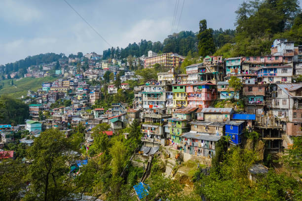
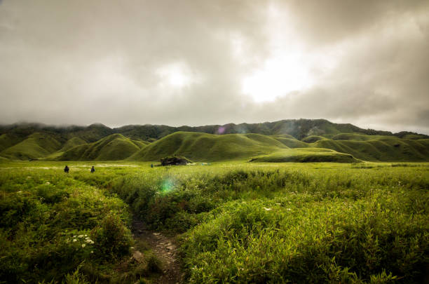
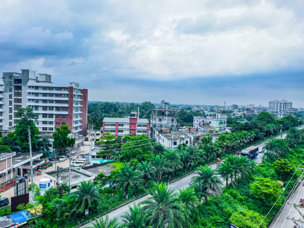
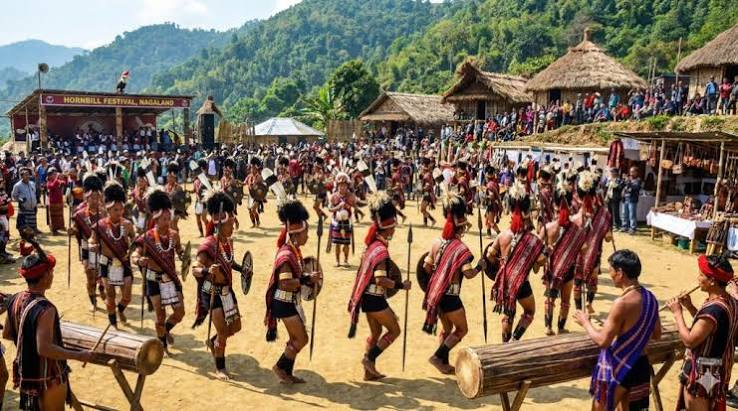
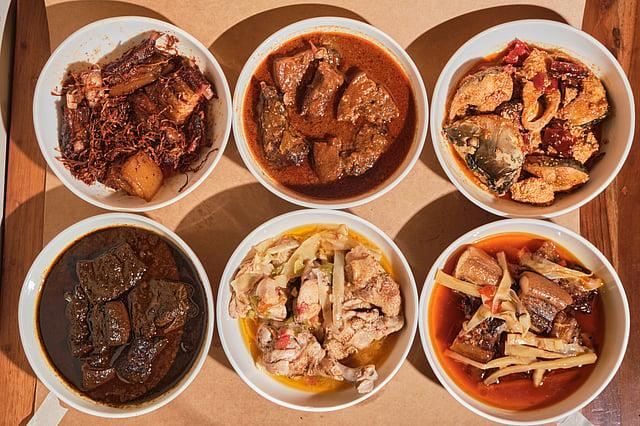

01
Kohima
The picturesque capital city — famous for the historic Kohima War Cemetery, Naga Heritage Village Kisama, and panoramic hill views.

Discover misty mountain ridges, vibrant tribal heritage, the celebrated Hornbill Festival, and the warm indigenous hospitality of Nagaland.
Explore Nagaland ↓Nagaland is an enchanting northeastern hill state defined by 16 major indigenous tribes, rich oral folklore, woodcraft artistry, and traditional village democracies.
From the scenic ridge capital of Kohima and the pristine green paradise of Dzükou Valley to the heritage crafts of Dimapur and the grand annual Hornbill Festival, Nagaland offers a deeply authentic Himalayan experience.
Iconic valleys, tribal villages, and historical destinations across Nagaland.

The picturesque capital city — famous for the historic Kohima War Cemetery, Naga Heritage Village Kisama, and panoramic hill views.

A pristine high-altitude valley famous for undulating emerald hills, seasonal Dzükou lilies, crystal streams, and trekking trails.

Nagaland's commercial gateway — known for medieval Kachari kingdom monolithic stone ruins, handloom centers, and busy markets.

The Festival of Festivals held every December at Kisama, uniting all 16 tribes in colorful traditional attire, warrior dances, and music.
Naga cuisine is distinct and bold — celebrated for smoked meats, fermented organic ingredients, fresh bamboo shoot curries, and fiery Raja Mircha (Bhut Jolokia).

16 distinct tribes (including Angami, Ao, Konyak, and Sumi) each possessing unique shawls, customs, and woodcarving styles.
Vibrant post-sowing and thanksgiving festivals celebrated with warrior chanting, indigenous sports, and community feasts.
Polyphonic folk vocal traditions, log drum resonance ceremonies, and traditional bamboo mouth organs.
Distinctive geometric tribal shawls woven on loin looms, beadwork ornaments, and intricate bamboo basketry.
Discover all 28 states, local food specialties, and centuries of living traditions.
← Back to All States